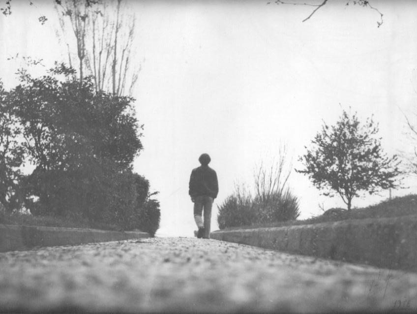
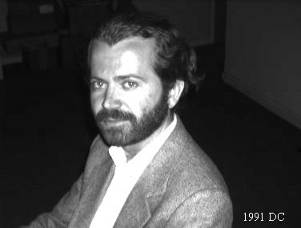

Born:
▪ 1959-feb-17 in
Arta
(Fotino),
GREECE.
#h0p1#
Interests:
▪
Sensorial-b-concept--theory
(Sensorial-b-concept--system).
Since about 1985 I have devoted my life on them.
▪ Java Computer Language.
▪ Xml Markup Language.
#h0p2#
Background:
▪ Since 2002-sep-01 I'm living in
Joannina.
▪ From 1999-sep-01 to 2002-jun-30 we were living in
Lefkada (Vasiliki) island.
▪ I have two sons: Apostolos,
born in 1997-jan-22 and Aristotelis, born in 1998-nov-26.
#h0p3#
Education:
▪ Bs in Mathematics,
Univ. of Joannina, Greece (1981)
▪ Ms in Information Management,
GWU, USA (1992)
▪ Mainly, I am a self-educated
person, especially in Philosophy, Linguistics, Economics, Sociology,
History, Political-science.
▪ But, as
Socrates
said very long ago, I am sure that only:
"ONE thing I know, that NOTHING know."
("ἓν οἶδα ὅτι οὐδὲν οἶδα")
#h0p4#
Current employment:
▪ High-School Information-Technology
Teacher.
#h0p5#

A picture of me in 1978 (19 years old) that shows my view of my life at that moment.

Another picture of me in 1991 (32 years old) taken with one of
the first digital cameras in Washington DC.
And a picture of me the day I published my work.
LAST-MODIFIED: 2010.06.04
PUBLISHED: 1996
CREATED: 1996
URL: http://aaj.sourceforge.net/author.html
MAIL: userid@domain, where userid=nikkas and domain=otenet.gr
(Nikos|Nikolaos Kasselouris|Kaselouris|Kaseluris or
Νίκος|Νικόλαος Κασσελούρης)